Anhang zu: ZAHLENLEHRE
AXIOMATISIERUNG DER NATÜRLICHEN ZAHLEN?
Im Skriptum haben wir die natürlichen Zahlen als Positionen auf der Zahlengeraden eingeführt. Das bringt Details ins Spiel, die nichts mit dem Wesen der natürlichen Zahlen zu tun haben. Das wird besser von einer abstrakten Definition wie den Axiomen von Peano eingefangen:
|
(1) Eins ist eine natürliche Zahl. (2) Jede natürliche Zahl hat genau eine solche als Nachfolger. (3) Es gibt keine natürliche Zahl, deren Nachfolger Eins ist. (4) Natürliche Zahlen mit gleichem Nachfolger sind gleich. |
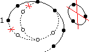 |
(5) Enthält eine Menge die Eins und mit jeder natürlichen Zahl auch deren Nachfolger, dann enthält sie alle natürlichen Zahlen (Induktionsaxiom).
DEFINITION DER ADDITION?
Zu jedem x

 gibt es genau eine Funktion addx:
gibt es genau eine Funktion addx:  , sodass
, sodass
E1: addx(1) = x + 1 (angehängtes "+1" soll den Nachfolger bezeichnen)
E2: addx(y+1) = addx(y) + 1 für alle y
Beweis:
a) Existenz:
Induktionsanfang: add1(y) := y + 1
E1: add1(1) = 1 + 1

E2: add1(y+1) = (y+1) + 1 = add1(y) + 1
Induktionsschritt: Wenn es ein addx mit E1,2 gibt, sei addx+1(y) := addx(y) + 1
E1: addx+1(1) = addx(1) + 1 = (x + 1) + 1
E2: addx+1(y+1) = addx(y+1) + 1 = (addx(y) + 1) + 1 = addx+1(y) + 1
Induktionsschluss: M = { x
| es gibt ein addx mit E1,2 } enthält 1 und mit jedem x auch x+1, daher ist M = .b) Eindeutigkeit:
Für jede Funktion fx mit den Eigenschaften E1,2 gilt:
Induktionsanfang: fx(1) = x + 1 = addx(1)
Induktionsschritt: fx(y) = addx(y)
 fx(y+1) = fx(y) + 1 = addx(y) + 1 = addx(y+1)
fx(y+1) = fx(y) + 1 = addx(y) + 1 = addx(y+1)Induktionsschluss: Mx = { y
| fx(y) = addx(y) } enthält 1 und mit jedem y auch y+1, daher ist Mx = .Die für den Nachfolger von x eingeführte Schreibweise dehnen wir mit
x + y := addx(y)
auf alle y aus, sodass sich E2 so liest:
x + (y+1) = (x+y) + 1 für alle x, y
BEWEIS: ADDITION IST ASSOZIATIV
Für feste x, y
gilt:Induktionsanfang: (x+y) + 1 = x + (y+1)
Induktionsschritt: (x + y) + z = x + (y + z)
[x + y] + (z + 1) = [(x + y) + z] + 1 = [x + (y + z)] + 1 = x + [(y + z) + 1] = x + [y + (z + 1)]Induktionsschluss: Mxy = { z
| (x+y) + z = x + (y+z) } enthält 1 und mit jedem z auch z+1, daher ist Mxy = .BEWEIS: ADDITION IST KOMMUTATIV
Für festes y
gilt:Induktionsanfang: 1 + y = add1(y) = y + 1
Induktionsschritt: x + y = y + x
(x+1) + y = addx+1(y) = addx(y) + 1 = (x+y) + 1 = (y+x) + 1 = y + (x+1)Induktionsschluss: My = { x
| x + y = y + x } enthält 1 und mit jedem x auch x+1, daher ist My = .1-BIT-VOLLADDIERER ALS LOGIKGATTER?
Mit den Schaltsymbolen laut IEC 60617-12: & = UND, ≥1 = ODER, =1 = XOR
1-Bit-Halbaddierer: 1-Bit-Volladdierer:
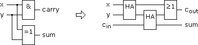
Dass der 1-Bit-Volladdierer seinem Namen gerecht wird, zeigt die Wahrheitstafel:
| x | y | cin |
cout = Σ div 2 =
(x ∧ y) ∨ [(x  y) ∧ cin] y) ∧ cin]
|
sum = Σ mod 2 =
(x y) cin
|
| 0 | 0 | 0 | 0 | 0 |
| 0 | 0 | 1 | 0 | 1 |
| 0 | 1 | 0 | 0 | 1 |
| 0 | 1 | 1 | 1 | 0 |
| 1 | 0 | 0 | 0 | 1 |
| 1 | 0 | 1 | 1 | 0 |
| 1 | 1 | 0 | 1 | 0 |
| 1 | 1 | 1 | 1 | 1 |
GRAFISCHE SUBTRAKTION UND divISION?
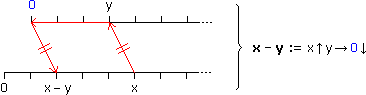
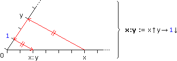
ERZWUNGENE DEFINITIONEN?
Wenn wir bei der Erfindung neuer Zahlen eine abstrakte Vorgehensweise wählen und bei der Ausdehnung der Operatordefinitionen verlangen, dass die Operatoreigenschaften erhalten bleiben sollen, gibt es keinen Spielraum mehr. Am Beispiel der Vorzeichenregel:
a) 0a =
0 bei ADD neutral
0a + 0 =
Inverse Elemente
0a + [a + (–a)] =
Assoziativgesetz
[0a + a] + (–a) =
1 bei MUL neutral
[0a + 1a] + (–a) =
Distributivgesetz (herausheben)
(0 + 1)a + (–a) =
0 bei ADD neutral
1a + (–a) =
1 bei MUL neutral
a + (–a) =
Inverse Elemente
0
b) (–a)b =
0 bei ADD neutral
(–a)b + 0 =
Inverse Elemente
(–a)b + [ab + (–ab)] =
Assoziativgesetz
[(–a)b + ab] + (–ab) =
Distributivgesetz (herausheben)
[(–a) + a]b + (–ab) =
Inverse Elemente
0b + (–ab) =
siehe a)
0 + (–ab) =
0 bei ADD neutral
–ab
c) (–a)(–b) =
0 bei ADD neutral
(–a)(–b) + 0 =
Inverse Elemente
(–a)(–b) + [(–ab) + ab] =
Assoziativgesetz
[(–a)(–b) + (–ab)] + ab =
siehe b)
[(–a)(–b) + (–a)b] + ab =
Distributivgesetz (herausheben)
(–a)[(–b) + b] + ab =
Inverse Elemente
(–a)0 + ab =
siehe a)
0 + ab =
0 bei ADD neutral
ab
Und Bruchrechenregeln:
a)
a
b
c
d
erweitern
ad
bd
bc
bd
Division als Multiplikation
ad
1
bd
1
bd
Distributivgesetz (herausheben)
(ad + bc)
1
bd
Multiplikation als Division
ad + bc
bd
b)
1
a
1
b
erweitern
1
a
a
ab
Division als Multiplikation
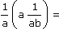
Assoziativgesetz
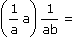
Inverse Elemente
1
1
ab
1 bei MUL neutral
1
ab
c)
a
b
c
d
Division als Multiplikation
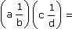
"Kompass"-Regel
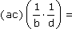
siehe b)
ac
1
bd
Multiplikation als Division
ac
bd
Auch die erweiterte Potenzdefinition wird dadurch erzwungen, dass die (Potenz)Rechenregeln erhalten bleiben sollen:
a) xnx0 = xn+0 = xn |:xn
x0 = 1b) xnx–n = xn–n = x0 = 1 |:xn
x–n = 1
xn
c) 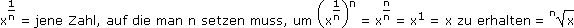
BEWEIS: EUKLIDISCHER ALGORITHMUS
Beginnend mit a1,a2
* führen wir fortlaufend Modulo-Divisionen aus, indem wir den vorigen Divisor durch den vorigen Rest dividieren. Sobald der Rest 0 wird, haben wir mit dem letzten Divisor das ggT(a1,a2) gefunden.Beweis (im Folgenden steht ? für wechselnde ganze Zahlen):
1) Wir schreiben die fortlaufenden Divisionen untereinander und ersetzen von unten nach oben:
a1 = ?a2 + (0 <) a3 (< a2)
a2 = ?a3 + (0 <) a4 (< a3)
a3 = ?a4 + (0 <) a5 (< a4)
···
an–2 = ?an–1 + (0 <) an (< an–1)
an–1 = ?an + 0
a2 = ?a3 + (0 <) a4 (< a3)
a3 = ?a4 + (0 <) a5 (< a4)
···
an–2 = ?an–1 + (0 <) an (< an–1)
an–1 = ?an + 0
a1 = ?an und a2 = ?an
an–2 = ?an
2) Wir stellen in obigen Divisionen den Rest frei und ersetzen von oben nach unten:
a3 = a1 + ?a2
a4 = a2 + ?a3
a5 = a3 + ?a4
···
an = an–2 + ?an–1
a4 = a2 + ?a3
a5 = a3 + ?a4
···
an = an–2 + ?an–1
a4 = ?a1 + ?a2
an = ?a1 + ?a2
1) sagt, dass an gemeinsamer Teiler von a1 und a2 ist, und aus 2) folgt, dass jeder gemeinsame Teiler von a1 und a2 auch Teiler von an ist.
Beispiel: ggT(540,200) = ?
540 mod 200 = 140
200 mod 140 = 60
140 mod 60 = 20
60 mod 20 = 0 ggT = 20
200 mod 140 = 60
140 mod 60 = 20
60 mod 20 = 0
ggT = 20BEWEIS: EINDEUTIGKEIT DER PRIMFAKTORZERLEGUNG
Aus 2) folgt weiters, dass jede Primzahl p, die das Produkt von a,b
* teilt, bereits a oder b teilt:Wenn p kein Teiler von a, ist ggT(a,p) = 1 = ?a + ?p |·b
b = ?ab + ?p = ?pDaher muss jede Primzahl p, die das Produkt der Primzahlen p1,... pk teilt, mit einem der Faktoren übereinstimmen:
Wenn p ≠ p1
p Teiler von p2...pk und wenn p ≠ p2 p Teiler von p3...pk usw.Hätte eine Zahl zwei verschiedene Primfaktorzerlegungen, dann gäbe es einen Primfaktor p, der in beiden Zerlegungen unterschiedlich oft vorkommt. Wenn wir beide Zerlegungen so oft durch p dividieren, dass p in der einen Zerlegung nicht mehr vorkommt, ist diese nicht mehr durch p teilbar, die andere aber schon – ein Widerspruch.
BEWEIS: √x = irrational, falls x ≠ 12,22,32,…
Die in x (> 1) enthaltenen Primzahlen seien p1,... pk, sodass:
x = p1m1 ... pkmk (mi > 0)
Wenn x nicht Quadrat einer natürlichen Zahl ist, muss eines der mi ungerade sein und damit folgt aus
√p1m1 ... pkmk =
m
n
der Widerspruch zur Eindeutigkeit der Primfaktorzerlegung, da dann pi links ungeradzahlig oft vorkommt und rechts geradzahlig oft:
p1m1 ... pkmkn2 = m2
KETTENBRÜCHE?
Ein (regulärer) Kettenbruch ist der euklidische Algorithmus, geschrieben als Bruchschachtelung. Beispiel:
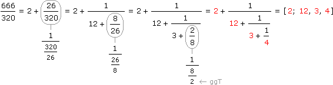
Jede Zahl a
 ist so in einen Kettenbruch [a0; a1, a2, ...] entwickelbar, wobei die "Näherungsbrüche"
ist so in einen Kettenbruch [a0; a1, a2, ...] entwickelbar, wobei die "Näherungsbrüche"[a0], [a0; a1], [a0; a1, a2], ...
oszillierend gegen a laufen. Die endlichen Kettenbrüche entsprechen den rationalen Zahlen, die unendlichen den irrationalen. Die irrationalen Zahlen werden in algebraisch und transzendet eingeteilt – je nachdem, ob es sich um Nullstellen von Polynomen mit rationalen Koeffizienten handelt oder nicht. Die periodischen Kettenbrüche entsprechen in diesem Zusammenhang den (irrationalen) Nullstellen quadratischer Polynome.
Beispiel für eine quadratische Irrationalität:
√3 = [1; 1, 2, 1, 2, 1, 2, ...]
Beispiel für eine transzendente Irrationalität:
e = [2; 1, 2, 1, 1, 4, 1, 1, 6, 1, 1, 8, ...]
DEZIMALZAHLEN IN DUALZAHLEN UMWANDELN?
Vor- und Nachkommateil der Dezimalzahl werden fortlaufend mit 2 dividiert/multipliziert, sodass sie näher an das Komma heranrücken. Was über das Komma hinausschießt, wird gestrichen. Jede Operation mit/ohne Streichung liefert eine 1/0 der Dualzahl. Beispiel:
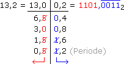
Bem: Programme speichern und verrechnen Dualzahlen, während im Quelltext in der Regel Dezimalzahlen stehen. Wie man sieht, kann bereits die Kompilierung des Quelltexts in maschinentaugliche Form Rundungsfehler zur Folge haben.
ALGEBRAISCHE STRUKTUREN?
Wie in der Logik und Mengenlehre können wir auch beim Rechnen mit Zahlen den Operatoren/Operanden ihre konkrete Bedeutung nehmen. An die Stelle der booleschen Algebra treten dann, ausgehend von einer Menge A samt Operatoren
 ,
,  : AxA A, folgende algebraische Strukturen:
: AxA A, folgende algebraische Strukturen:(A,
) heißt (kommutative) Halbgruppe, wenn (kommutativ und) assoziativ ist.
(A, ) heißt Monoid, wenn (A, ) eine Halbgruppe mit neutralem Element n ist.
) heißt Monoid, wenn (A, ) eine Halbgruppe mit neutralem Element n ist.
(A, ) heißt Gruppe, wenn (A, ) ein Monoid ist und zu jedem x ein inverses Element x existiert.
) heißt Gruppe, wenn (A, ) ein Monoid ist und zu jedem x ein inverses Element x existiert.
(A, , ) heißt (kommutativer) Ring, wenn (A, ) eine kommutative Gruppe und (kommutativ und) assoziativ und distributiv zu ist.
, ) heißt (kommutativer) Ring, wenn (A, ) eine kommutative Gruppe und (kommutativ und) assoziativ und distributiv zu ist.
(A, , ) heißt unitärer Ring, wenn (A, , ) ein Ring mit neutralem Element n ist.
, ) heißt unitärer Ring, wenn (A, , ) ein Ring mit neutralem Element n ist.
(A, , ) heißt Körper, wenn (A, , ) ein kommutativer unitärer Ring ist und zu jedem x ≠ n ein inverses Element x existiert.
, ) heißt Körper, wenn (A, , ) ein kommutativer unitärer Ring ist und zu jedem x ≠ n ein inverses Element x existiert.Beispiele: (
 , +, ·) ist ein kommutativer unitärer Ring, der durch Reduktion auf gerade/ungerade zum Restklassenring /2 = ({0,1}, , ∧) wird, dem kleinsten aller Körper. Weitere Körper sind (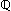, +, ·) und (, +, ·), der größte ist (
, +, ·) ist ein kommutativer unitärer Ring, der durch Reduktion auf gerade/ungerade zum Restklassenring /2 = ({0,1}, , ∧) wird, dem kleinsten aller Körper. Weitere Körper sind (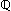, +, ·) und (, +, ·), der größte ist ( , +, ·).
, +, ·).